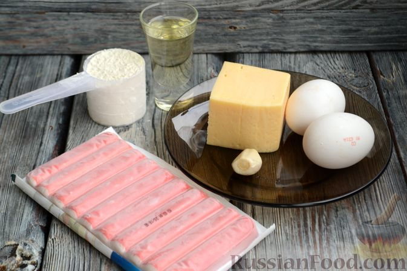
Шаг 1. Подготовьте все необходимые ингредиенты. Крабовые палочки размораживать не нужно.
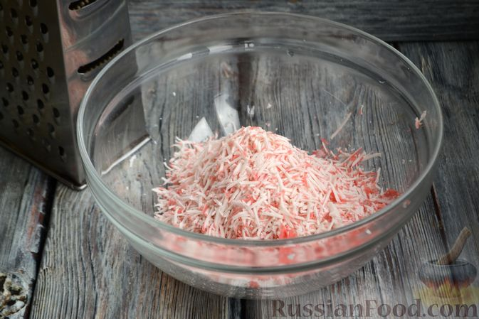
Шаг 2. Освободите крабовые палочки от упаковки и натрите на мелкой тёрке в глубокую миску.
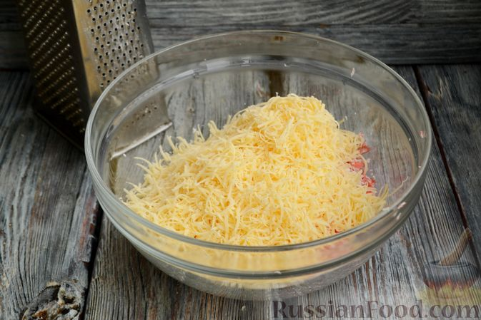
Шаг 3. В ту же миску натрите на мелкой тёрке твёрдый сыр.
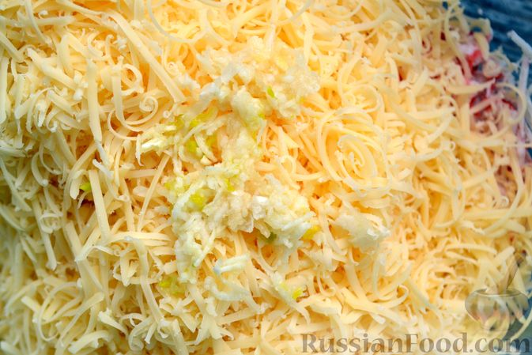
Шаг 4. Зубчик чеснока выдавите через пресс или натрите на мелкой тёрке, добавьте в миску к сыру и тёртым крабовым палочкам.
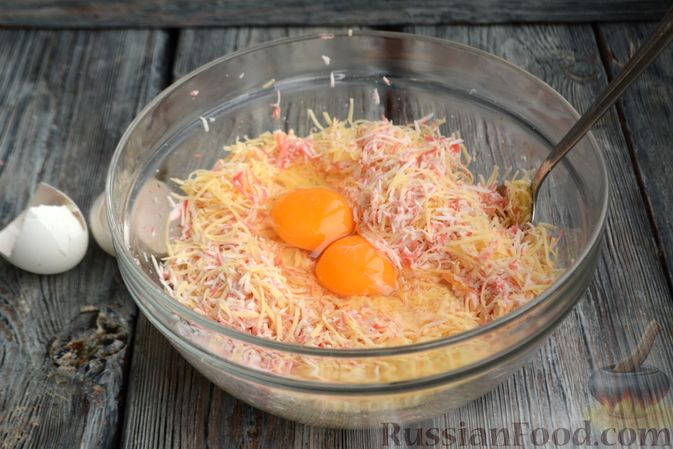
Шаг 5. Добавьте два яйца, можно досолить по вкусу. Я соль не добавляла, так как и сыр, и палочки уже содержат соль.
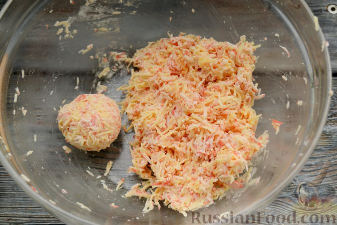
Шаг 6. Перемешайте все ингредиенты, чтобы они соединились в однородную массу. Из 1-2 столовых ложек массы скатайте шарик.
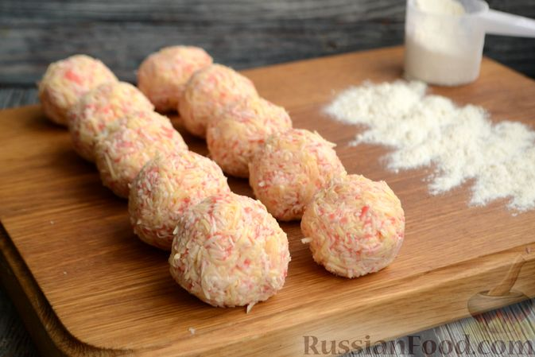
Шаг 7. Сделайте шарики из всей массы для котлет. У меня получилось 10 штук.
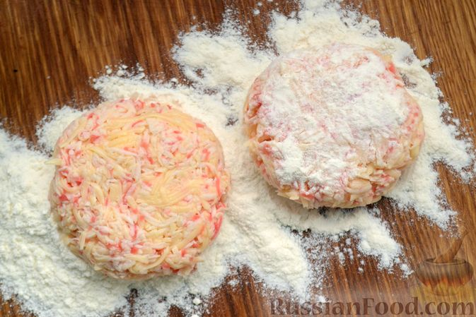
Шаг 8. Муку насыпьте на доску. Каждый шарик приплюсните в круглую котлетку толщиной 1-1,5 см и обваляйте в муке с двух сторон.
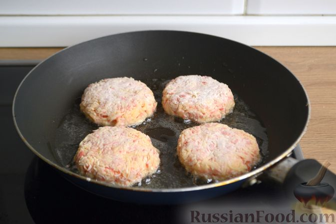
Шаг 9. Разогрейте растительное масло на сковороде. Обжаривайте котлеты из крабовых палочек сперва с одной стороны 1-2 минуты.
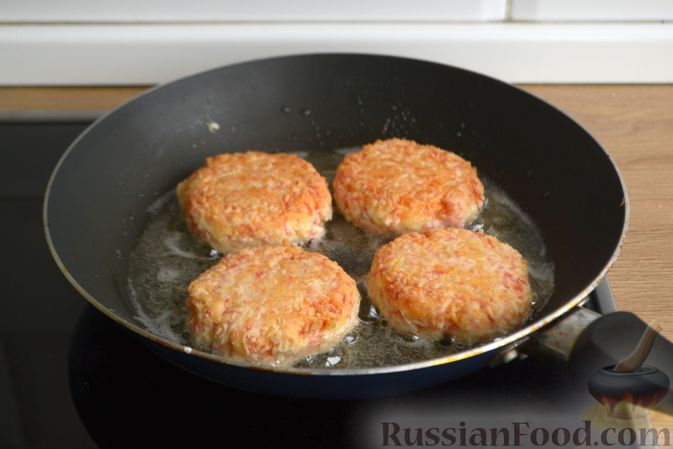
Шаг 10. Переверните на другую сторону и жарьте ещё 2 минуты.
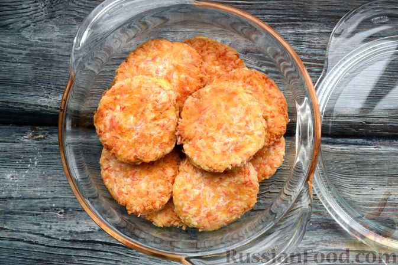
Шаг 11. Готовые котлеты складывайте в кастрюлю. Затем накройте крышкой и подержите на выключенной плите ещё 3-5 минут.
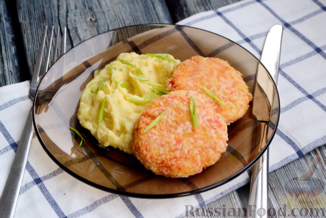
Шаг 12. Подавайте котлеты из сыра и крабовых палочек с любым гарниром. Блюдо можно украсить свежей зеленью - перьями лука или укропом.